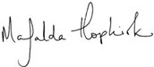

Harry managed not to shout out, but it was a close thing. The little creature on the bed had large, bat-like ears and bulging green eyes the size of tennis balls. Harry knew instantly that this was what had been watching him out of the garden hedge that morning.
As they stared at each other, Harry heard Dudley’s voice from the hall.
“May I take your coats, Mr. and Mrs. Mason?”
The creature slipped off the bed and bowed so low that the end of its long, thin nose touched the carpet. Harry noticed that it was wearing what looked like an old pillowcase, with rips for arm- and leg-holes.
“Er — hello,” said Harry nervously.
“Harry Potter!” said the creature in a high-pitched voice Harry was sure would carry down the stairs. “So long has Dobby wanted to meet you, sir . . . Such an honor it is. . . .”
“Th-thank you,” said Harry, edging along the wall and sinking into his desk chair, next to Hedwig, who was asleep in her large cage. He wanted to ask, “What are you?” but thought it would sound too rude, so instead he said, “Who are you?”
“Dobby, sir. Just Dobby. Dobby the house-elf,” said the creature.
“Oh — really?” said Harry. “Er — I don’t want to be rude or anything, but — this isn’t a great time for me to have a house-elf in my bedroom.”
Aunt Petunia’s high, false laugh sounded from the living room. The elf hung his head.
“Not that I’m not pleased to meet you,” said Harry quickly, “but, er, is there any particular reason you’re here?”
“Oh, yes, sir,” said Dobby earnestly. “Dobby has come to tell you, sir . . . it is difficult, sir . . . Dobby wonders where to begin. . . .”
“Sit down,” said Harry politely, pointing at the bed.
To his horror, the elf burst into tears — very noisy tears.
“S-sit down!” he wailed. “Never . . . never ever . . .”
Harry thought he heard the voices downstairs falter.
“I’m sorry,” he whispered, “I didn’t mean to offend you or anything —”
“Offend Dobby!” choked the elf. “Dobby has never been asked to sit down by a wizard — like an equal —”
Harry, trying to say “Shh!” and look comforting at the same time, ushered Dobby back onto the bed where he sat hiccoughing, looking like a large and very ugly doll. At last he managed to control himself, and sat with his great eyes fixed on Harry in an expression of watery adoration.
“You can’t have met many decent wizards,” said Harry, trying to cheer him up.
Dobby shook his head. Then, without warning, he leapt up and started banging his head furiously on the window, shouting, “Bad Dobby! Bad Dobby!”
“Don’t — what are you doing?” Harry hissed, springing up and pulling Dobby back onto the bed — Hedwig had woken up with a particularly loud screech and was beating her wings wildly against the bars of her cage.
“Dobby had to punish himself, sir,” said the elf, who had gone slightly cross-eyed. “Dobby almost spoke ill of his family, sir. . . .”
“Your family?”
“The wizard family Dobby serves, sir. . . . Dobby is a house-elf — bound to serve one house and one family forever. . . .”
“Do they know you’re here?” asked Harry curiously.
Dobby shuddered.
“Oh, no, sir, no . . . Dobby will have to punish himself most grievously for coming to see you, sir. Dobby will have to shut his ears in the oven door for this. If they ever knew, sir —”
“But won’t they notice if you shut your ears in the oven door?”
“Dobby doubts it, sir. Dobby is always having to punish himself for something, sir. They lets Dobby get on with it, sir. Sometimes they reminds me to do extra punishments. . . .”
“But why don’t you leave? Escape?”
“A house-elf must be set free, sir. And the family will never set Dobby free . . . Dobby will serve the family until he dies, sir. . . .”
Harry stared.
“And I thought I had it bad staying here for another four weeks,” he said. “This makes the Dursleys sound almost human. Can’t anyone help you? Can’t I?”
Almost at once, Harry wished he hadn’t spoken. Dobby dissolved again into wails of gratitude.
“Please,” Harry whispered frantically, “please be quiet. If the Dursleys hear anything, if they know you’re here —”
“Harry Potter asks if he can help Dobby . . . Dobby has heard of your greatness, sir, but of your goodness, Dobby never knew. . . .”
Harry, who was feeling distinctly hot in the face, said, “Whatever you’ve heard about my greatness is a load of rubbish. I’m not even top of my year at Hogwarts; that’s Hermione, she —”
But he stopped quickly, because thinking about Hermione was painful.
“Harry Potter is humble and modest,” said Dobby reverently, his orb-like eyes aglow. “Harry Potter speaks not of his triumph over He-Who-Must-Not-Be-Named —”
“Voldemort?” said Harry.
Dobby clapped his hands over his bat ears and moaned, “Ah, speak not the name, sir! Speak not the name!”
“Sorry,” said Harry quickly. “I know lots of people don’t like it. My friend Ron —”
He stopped again. Thinking about Ron was painful, too.
Dobby leaned toward Harry, his eyes wide as headlights.
“Dobby heard tell,” he said hoarsely, “that Harry Potter met the Dark Lord for a second time, just weeks ago . . . that Harry Potter escaped yet again.”
Harry nodded and Dobby’s eyes suddenly shone with tears.
“Ah, sir,” he gasped, dabbing his face with a corner of the grubby pillowcase he was wearing. “Harry Potter is valiant and bold! He has braved so many dangers already! But Dobby has come to protect Harry Potter, to warn him, even if he does have to shut his ears in the oven door later. . . . Harry Potter must not go back to Hogwarts.”
There was a silence broken only by the chink of knives and forks from downstairs and the distant rumble of Uncle Vernon’s voice.
“W-what?” Harry stammered. “But I’ve got to go back — term starts on September first. It’s all that’s keeping me going. You don’t know what it’s like here. I don’t belong here. I belong in your world — at Hogwarts.”
“No, no, no,” squeaked Dobby, shaking his head so hard his ears flapped. “Harry Potter must stay where he is safe. He is too great, too good, to lose. If Harry Potter goes back to Hogwarts, he will be in mortal danger.”
“Why?” said Harry in surprise.
“There is a plot, Harry Potter. A plot to make most terrible things happen at Hogwarts School of Witchcraft and Wizardry this year,” whispered Dobby, suddenly trembling all over. “Dobby has known it for months, sir. Harry Potter must not put himself in peril. He is too important, sir!”
“What terrible things?” said Harry at once. “Who’s plotting them?”
Dobby made a funny choking noise and then banged his head frantically against the wall.
“All right!” cried Harry, grabbing the elf’s arm to stop him. “You can’t tell me. I understand. But why are you warning me?” A sudden, unpleasant thought struck him. “Hang on — this hasn’t got anything to do with Vol- — sorry — with You-Know-Who, has it? You could just shake or nod,” he added hastily as Dobby’s head tilted worryingly close to the wall again.
Slowly, Dobby shook his head.
“Not — not He-Who-Must-Not-Be-Named, sir —”
But Dobby’s eyes were wide and he seemed to be trying to give Harry a hint. Harry, however, was completely lost.
“He hasn’t got a brother, has he?”
Dobby shook his head, his eyes wider than ever.
“Well then, I can’t think who else would have a chance of making horrible things happen at Hogwarts,” said Harry. “I mean, there’s Dumbledore, for one thing — you know who Dumbledore is, don’t you?”
Dobby bowed his head.
“Albus Dumbledore is the greatest headmaster Hogwarts has ever had. Dobby knows it, sir. Dobby has heard Dumbledore’s powers rival those of He-Who-Must-Not-Be-Named at the height of his strength. But, sir” — Dobby’s voice dropped to an urgent whisper — “there are powers Dumbledore doesn’t . . . powers no decent wizard . . .”
And before Harry could stop him, Dobby bounded off the bed, seized Harry’s desk lamp, and started beating himself around the head with earsplitting yelps.
A sudden silence fell downstairs. Two seconds later Harry, heart thudding madly, heard Uncle Vernon coming into the hall, calling, “Dudley must have left his television on again, the little tyke!”
“Quick! In the closet!” hissed Harry, stuffing Dobby in, shutting the door, and flinging himself onto the bed just as the door handle turned.
“What — the — devil — are — you — doing?” said Uncle Vernon through gritted teeth, his face horribly close to Harry’s. “You’ve just ruined the punch line of my Japanese golfer joke. . . . One more sound and you’ll wish you’d never been born, boy!”
He stomped flat-footed from the room.
Shaking, Harry let Dobby out of the closet.
“See what it’s like here?” he said. “See why I’ve got to go back to Hogwarts? It’s the only place I’ve got — well, I think I’ve got friends.”
“Friends who don’t even write to Harry Potter?” said Dobby slyly.
“I expect they’ve just been — wait a minute,” said Harry, frowning. “How do you know my friends haven’t been writing to me?”
Dobby shuffled his feet.
“Harry Potter mustn’t be angry with Dobby. Dobby did it for the best —”
“Have you been stopping my letters?”
“Dobby has them here, sir,” said the elf. Stepping nimbly out of Harry’s reach, he pulled a thick wad of envelopes from the inside of the pillowcase he was wearing. Harry could make out Hermione’s neat writing, Ron’s untidy scrawl, and even a scribble that looked as though it was from the Hogwarts gamekeeper, Hagrid.
Dobby blinked anxiously up at Harry.
“Harry Potter mustn’t be angry. . . . Dobby hoped . . . if Harry Potter thought his friends had forgotten him . . . Harry Potter might not want to go back to school, sir. . . .”
Harry wasn’t listening. He made a grab for the letters, but Dobby jumped out of reach.
“Harry Potter will have them, sir, if he gives Dobby his word that he will not return to Hogwarts. Ah, sir, this is a danger you must not face! Say you won’t go back, sir!”
“No,” said Harry angrily. “Give me my friends’ letters!”
“Then Harry Potter leaves Dobby no choice,” said the elf sadly.
Before Harry could move, Dobby had darted to the bedroom door, pulled it open, and sprinted down the stairs.
Mouth dry, stomach lurching, Harry sprang after him, trying not to make a sound. He jumped the last six steps, landing catlike on the hall carpet, looking around for Dobby. From the dining room he heard Uncle Vernon saying, “. . . tell Petunia that very funny story about those American plumbers, Mr. Mason. She’s been dying to hear . . .”
Harry ran up the hall into the kitchen and felt his stomach disappear.
Aunt Petunia’s masterpiece of a pudding, the mountain of cream and sugared violets, was floating up near the ceiling. On top of a cupboard in the corner crouched Dobby.
“No,” croaked Harry. “Please . . . they’ll kill me. . . .”
“Harry Potter must say he’s not going back to school —”
“Dobby . . . please . . .”
“Say it, sir —”
“I can’t —”
Dobby gave him a tragic look.
“Then Dobby must do it, sir, for Harry Potter’s own good.”
The pudding fell to the floor with a heart-stopping crash. Cream splattered the windows and walls as the dish shattered. With a crack like a whip, Dobby vanished.
There were screams from the dining room and Uncle Vernon burst into the kitchen to find Harry, rigid with shock, covered from head to foot in Aunt Petunia’s pudding.
At first, it looked as though Uncle Vernon would manage to gloss the whole thing over. (“Just our nephew — very disturbed — meeting strangers upsets him, so we kept him upstairs. . . .”) He shooed the shocked Masons back into the dining room, promised Harry he would flay him to within an inch of his life when the Masons had left, and handed him a mop. Aunt Petunia dug some ice cream out of the freezer and Harry, still shaking, started scrubbing the kitchen clean.
Uncle Vernon might still have been able to make his deal — if it hadn’t been for the owl.
Aunt Petunia was just passing around a box of after-dinner mints when a huge barn owl swooped through the dining room window, dropped a letter on Mrs. Mason’s head, and swooped out again. Mrs. Mason screamed like a banshee and ran from the house shouting about lunatics. Mr. Mason stayed just long enough to tell the Dursleys that his wife was mortally afraid of birds of all shapes and sizes, and to ask whether this was their idea of a joke.
Harry stood in the kitchen, clutching the mop for support, as Uncle Vernon advanced on him, a demonic glint in his tiny eyes.
“Read it!” he hissed evilly, brandishing the letter the owl had delivered. “Go on — read it!”
Harry took it. It did not contain birthday greetings.
Dear Mr. Potter,
We have received intelligence that a Hover Charm was used at your place of residence this evening at twelve minutes past nine.
As you know, underage wizards are not permitted to perform spells outside school, and further spellwork on your part may lead to expulsion from said school (Decree for the Reasonable Restriction of Underage Sorcery, 1875, Paragraph C).
We would also ask you to remember that any magical activity that risks notice by members of the non-magical community (Muggles) is a serious offense under section 13 of the International Confederation of Warlocks’ Statute of Secrecy.
Enjoy your holidays!
Yours sincerely,

Mafalda Hopkirk
IMPROPER USE OF MAGIC OFFICE
Ministry of Magic
Harry looked up from the letter and gulped.
“You didn’t tell us you weren’t allowed to use magic outside school,” said Uncle Vernon, a mad gleam dancing in his eyes. “Forgot to mention it. . . . Slipped your mind, I daresay. . . .”
He was bearing down on Harry like a great bulldog, all his teeth bared. “Well, I’ve got news for you, boy. . . . I’m locking you up. . . . You’re never going back to that school . . . never . . . and if you try and magic yourself out — they’ll expel you!”
And laughing like a maniac, he dragged Harry back upstairs.
Uncle Vernon was as bad as his word. The following morning, he paid a man to fit bars on Harry’s window. He himself fitted a cat-flap in the bedroom door, so that small amounts of food could be pushed inside three times a day. They let Harry out to use the bathroom morning and evening. Otherwise, he was locked in his room around the clock.
Three days later, the Dursleys were showing no sign of relenting, and Harry couldn’t see any way out of his situation. He lay on his bed watching the sun sinking behind the bars on the window and wondered miserably what was going to happen to him.
What was the good of magicking himself out of his room if Hogwarts would expel him for doing it? Yet life at Privet Drive had reached an all-time low. Now that the Dursleys knew they weren’t going to wake up as fruit bats, he had lost his only weapon. Dobby might have saved Harry from horrible happenings at Hogwarts, but the way things were going, he’d probably starve to death anyway.
The cat-flap rattled and Aunt Petunia’s hand appeared, pushing a bowl of canned soup into the room. Harry, whose insides were aching with hunger, jumped off his bed and seized it. The soup was stone-cold, but he drank half of it in one gulp. Then he crossed the room to Hedwig’s cage and tipped the soggy vegetables at the bottom of the bowl into her empty food tray. She ruffled her feathers and gave him a look of deep disgust.
“It’s no good turning your beak up at it — that’s all we’ve got,” said Harry grimly.
He put the empty bowl back on the floor next to the cat-flap and lay back down on the bed, somehow even hungrier than he had been before the soup.
Supposing he was still alive in another four weeks, what would happen if he didn’t turn up at Hogwarts? Would someone be sent to see why he hadn’t come back? Would they be able to make the Dursleys let him go?
The room was growing dark. Exhausted, stomach rumbling, mind spinning over the same unanswerable questions, Harry fell into an uneasy sleep.
He dreamed that he was on show in a zoo, with a card reading UNDERAGE WIZARD attached to his cage. People goggled through the bars at him as he lay, starving and weak, on a bed of straw. He saw Dobby’s face in the crowd and shouted out, asking for help, but Dobby called, “Harry Potter is safe there, sir!” and vanished. Then the Dursleys appeared and Dudley rattled the bars of the cage, laughing at him.
“Stop it,” Harry muttered as the rattling pounded in his sore head. “Leave me alone . . . cut it out . . . I’m trying to sleep. . . .”
He opened his eyes. Moonlight was shining through the bars on the window. And someone was goggling through the bars at him: a freckle-faced, red-haired, long-nosed someone.
Ron Weasley was outside Harry’s window.